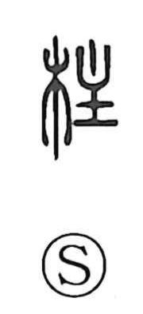

柱

Uncategorized
Kun: hashira | On: chuu
pillar ・ column ・ post ・ mainstay
Explanation
Shirakawa reads 柱 as a phono-semantic character: 木 indicates “wood,” while 主 serves as the phonetic element and originally depicts a candlestick—a tallow plate topped with a burning flame—an object that stands upright. From this image of vertical steadiness, combined with timber, the character comes to mean an upright post or pillar, and by extension the central support or mainstay of something. The Shuowen glosses it as a pillar and associates it with 楹 (ying), a round column with a slight bulge used in palatial and mausoleum architecture; in usage, however, 柱 may refer to both round and square posts.